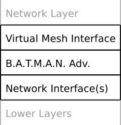
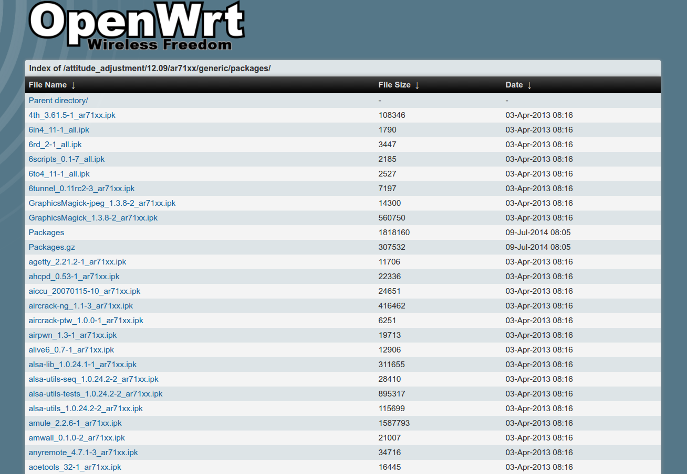
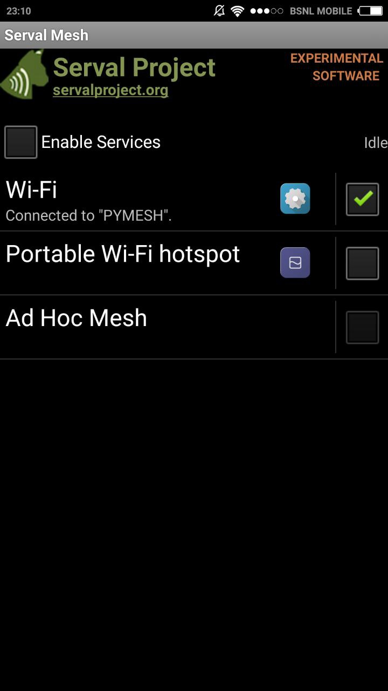
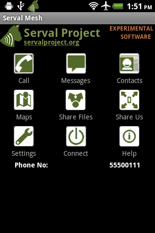
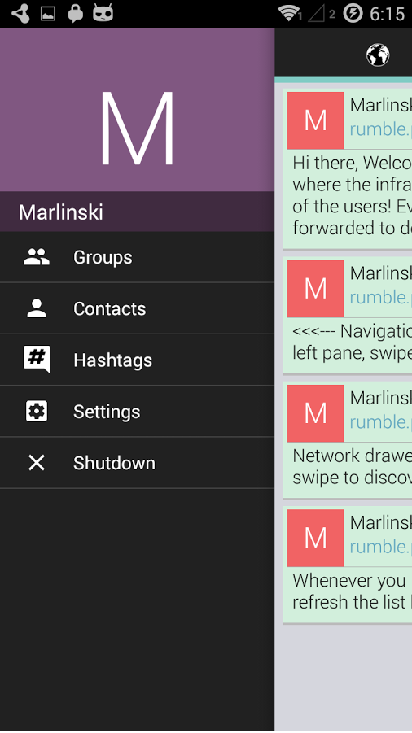
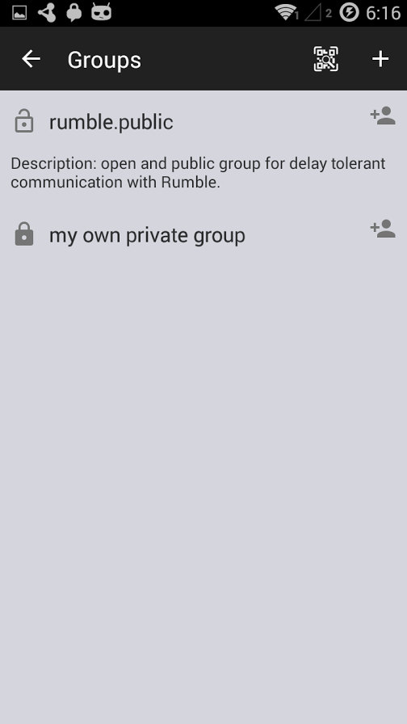
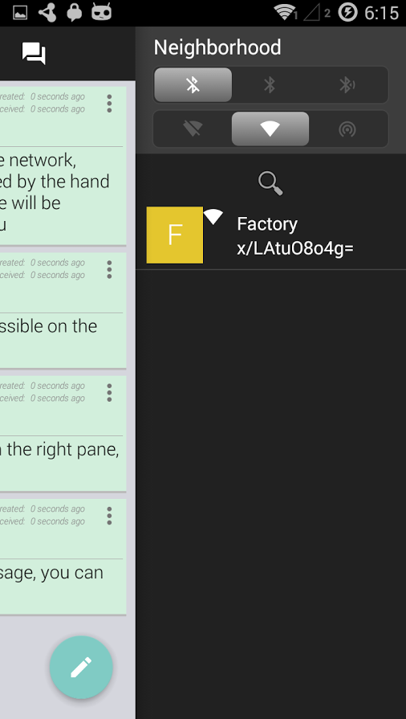
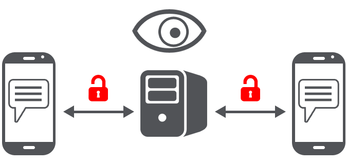
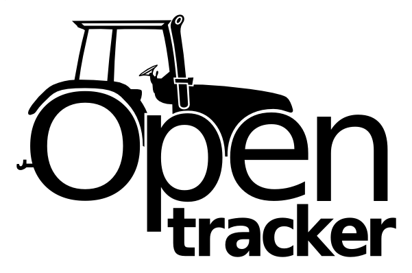

MESH NETWORK
A Practical Guide
Created by Suriyadeepan and Selva Kumar
Routing
Advantages
BABEL
loras ipsum. hipster hispanic. loras ipsum. hipster hispanic. loras ipsum. hipster hispanic.B.A.T.M.A.N.
loras ipsum. hipster hispanic. loras ipsum. hipster hispanic. loras ipsum. hipster hispanic.OLSR
loras ipsum. hipster hispanic. loras ipsum. hipster hispanic. loras ipsum. hipster hispanic.BMX6
loras ipsum. hipster hispanic. loras ipsum. hipster hispanic. loras ipsum. hipster hispanic.Disadvantages
BABEL
loras ipsum. hipster hispanic. loras ipsum. hipster hispanic. loras ipsum. hipster hispanic.B.A.T.M.A.N.
loras ipsum. hipster hispanic. loras ipsum. hipster hispanic. loras ipsum. hipster hispanic.OLSR
loras ipsum. hipster hispanic. loras ipsum. hipster hispanic. loras ipsum. hipster hispanic.BMX6
loras ipsum. hipster hispanic. loras ipsum. hipster hispanic. loras ipsum. hipster hispanic.Implementation
batman-adv
- Implemented as a linux kernel module
- Operates on layer 2 of network stack
batman-adv
- All the packets are encapsulated and routed by batman-adv
- All the participating nodes appear to be link-local
batman-adv
- Supports anything on top of layer 2 : IPV4, IPV6, DHCP, IPX
- Nodes can participate in a mesh without having an IP
- Easy integration of non-mesh clients (think Android)
batctl
- A tool to configure and debug the batman-adv kernel module
- Interface to settings and status information of batman-adv
- Provides a layer-2 version of ping, traceroute and tcpdump(MAC)
Configuration
- Add and remove interfaces to the mesh network
- Set or change parameters of batman-adv module
- Enable or disable features of batman-adv
batctl
- Get the list of mesh nodes and non-mesh nodes in the network
- Log messages from batman-adv
- List of available gateways
Compilation
Compatibility Check
Before compiling batman-adv or batctl find the versions compatible with your kernel.
Kernel Version
uname -r # 3.19.0-25-generic
Find compatible versions
From hereDowload
Download batclt and batman-advCompile batman-adv
# compile
make -j4
# find module
ls *.ko
# insert module
sudo insmod batman-adv.ko
# check version
batctl -v
Compile batctl
# compile
make -j4
# install
sudo make install
# check version
batctl -v
Quick Node setup
Add Interface
Which interface to add to batman-adv to build the mesh network?
# Add an interface wlan0/eth0
batctl if add wlan0
# check interface
batctl if
bat0 : Virtual Interface
Any packet that enters this interface will be examined by the batman-adv for its destination mac-adress and will be forwarded. Simple Mesh Network
# kill network manager
sudo service network-manager stop
# load the module up
modprobe batman-adv
# setup network interfaces
ip link set up dev eth0
# set mtu compatible with batman
ip link set mtu 1532 dev wlan0
# configure the wlan interface to operate with mtus of 1532
# (batman requires it) and turn enc off
iwconfig wlan0 mode ad-hoc channel 6 essid PYMESH ap 02:12:34:56:78:9A enc off
# add wlan0 to the batman-adv virtual interface
# (so it can communicate with other batman-adv nodes)
batctl if add wlan0
# bringing up wireless ad-hoc interface
ifconfig wlan0 up
# bringing up bat0 interface
ifconfig bat0 192.168.1.4 up
How to kill BATMAN?
# disable kernel module
rmmod batman-adv
# restart network manager
service network-manager restart
Bridge
Need to bridge Adhoc and Infrastructure APs
To let non-mesh nodes (think Android) connect to the network
Setup Bridge Interface
ip link add name mesh-bridge type bridge
ip link set dev eth0 master mesh-bridge
ip link set dev bat0 master mesh-bridge
ip link set up dev eth0
ip link set up dev bat0
ip link set up dev mesh-bridge
Openwrt
Compatibility Check
Table of HardwareCompiled Packages
downloads.openwrt.org/ IP & DNS
IP Allocation. How?
- Static IP
Manually setting a static IP address - DHCP
OpenWrt comes with DHCP server
Configuring DHCP
- Go to /etc/config/dhcp
- start : start address
- limit : number of devices to serve
/etc/config/dhcp
config dhcp 'lan'
option interface 'lan'
option start '100'
option limit '100'
option leasetime '12h'
/etc/config/network
config interface 'lan'
option ipaddr '192.168.1.1'
option netmask '255.255.255.0'
What is DNS?
- Domain Name Server
- Human readable names for services
How does it work?
- The browser talks to the DNS server, asks for name resolution
- DNS maintains the mapping between name to IP address
- DNS server looks in its map and reponds with the IP address
How do we do it?
OpenWRT comes with a DNS utility called Dnsmasq.
It can be configured through the LUCI interface.
Dnsmasq Configuration
- Find the IP address allocated to your laptop; say 192.168.1.162
- To add a mapping entry, log in to the router, via ssh
- Create a new file under directory /etc/, "hosts.pymesh"
- add the following line to the file
192.168.1.162 pymesh.p2pDnsmasq Configuration
- Log into the router, via browser
- Go to DHCP and DNS configuration page, In the top menu click Network -> DHCP and DNS.
- In the Additional Hosts Files field(highlighted in the figure below) add the name of the file which we have created above.
- Click Save & Apply
Dnsmasq Configuration
P2P Apps
Use Cases
- Chat
- Voice Call
- Social Networking
- Micro-blogging
- File Sharing
- Personal Website : Portfolio
- Knowledge sharing
Serval Project
Communications should not just be for the geographically, financially otherwise fortunate — for it is the unfortunate who need it most.
Serval Project
- Communicate anytime
- Communicate anywhere
- Communicate privately
- Communicate with people
Batphone for Android
 Rumble
  
Rumble
- Decentralized and delay-tolerant twitter-like mobile application
- Enables the spread of messages in an epidemic fashion using automatically formed and opportunistic local ad-hoc network
- Every message sent or received with are stored on the local database and pushed to every other device it meets
- Messages naturally propagates throughout the network using social links as the underlying infrastructure
Briar Project
 Typical messaging software relies on central servers and exposes messages and relationships to surveillance Direct, encrypted connections between users to prevent surveillance and censorship
Direct, encrypted connections between users to prevent surveillance and censorship
Briar Project
- Peer-to-peer encrypted messaging and forums
- Messages are stored securely on your device, not in the cloud
- Connect directly with nearby contacts - no Internet access required
- Free and open source software
- Designed for activists, journalists, and anyone else who needs a safe, easy and robust way to communicate
Open Tracker
opentracker is a open and free bittorrent tracker project.
It aims for minimal resource usage and is intended to run at your wlan router.
Open Tracker
A torrent tracker basically is an http-Server that collects all clients ip addresses into pools sorted by one of the request strings parameters and answers all other clients that specified this exact same parameter a list of all other recent clients.
OpenTracker for OpenWrt